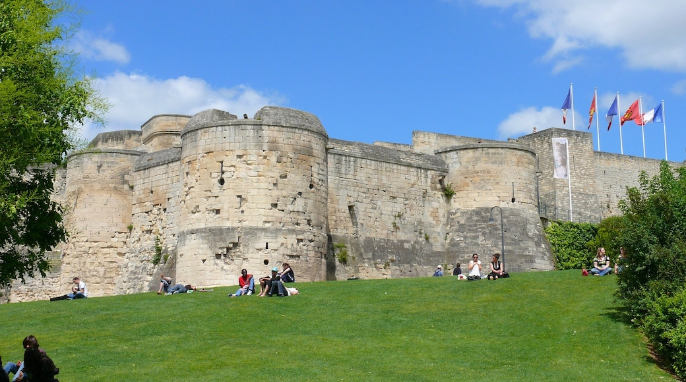

Le Château Ducal
Une des plus vastes enceintes médiévales d'Europe.
Voir l'histoire
Construit vers 1060 par Guillaume le Conquérant, ce château a traversé les siècles. Résidence ducale puis royale, il abrite aujourd'hui le Musée de Normandie et le Musée des Beaux-Arts.